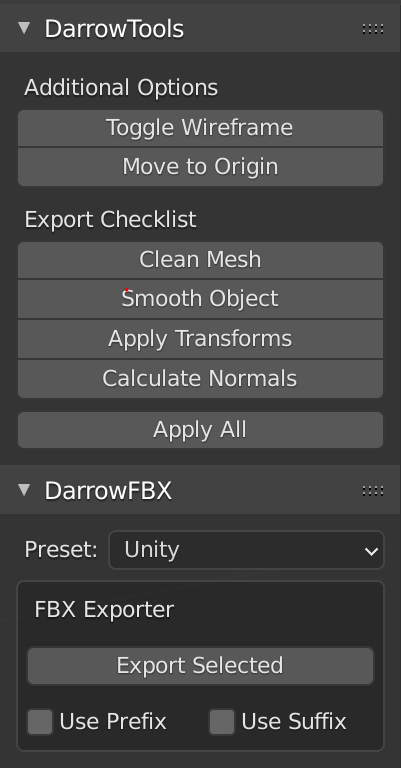
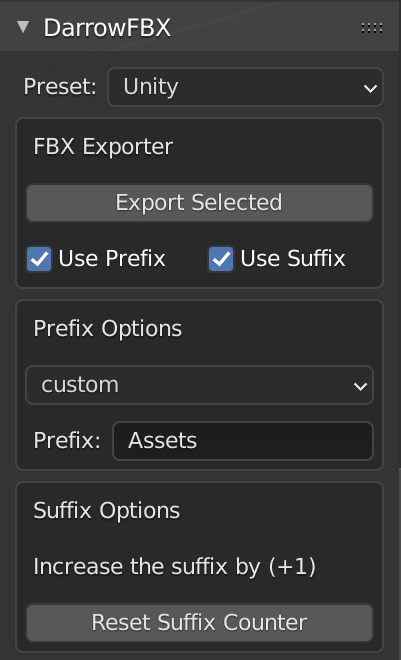
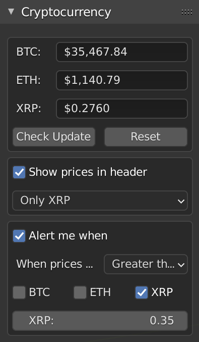

With this simple menu addon, exporting has never been easier! Export selected mesh as an FBX, using the mesh- no typing required!
Do you sometimes forget the steps involved before you export a mesh? Now with this addon, there is a one-stop menu to remind you!
This simple tool allows you to not worry about all those pesky settings, or even typing! All you do is select your mesh, hit "Export Selected", navigate to the file destination in the pop-up, and hit export!
Showcase your models with a quick wireframe overlay.

Never forget what you need to do before exporting again!

Overview of avaible options.
Export with a custom prefix or the .blend* name.
Export with a custom counting suffix.
